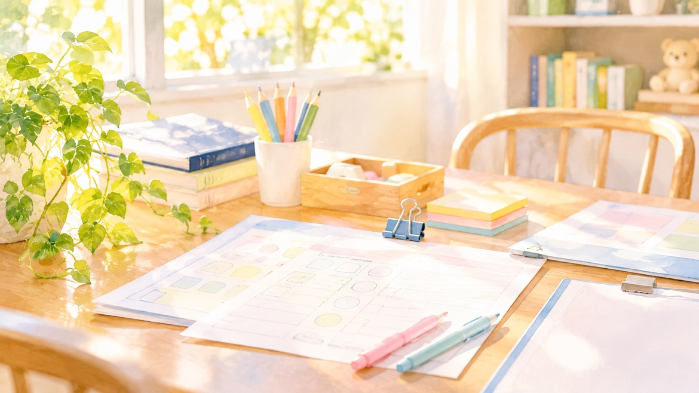
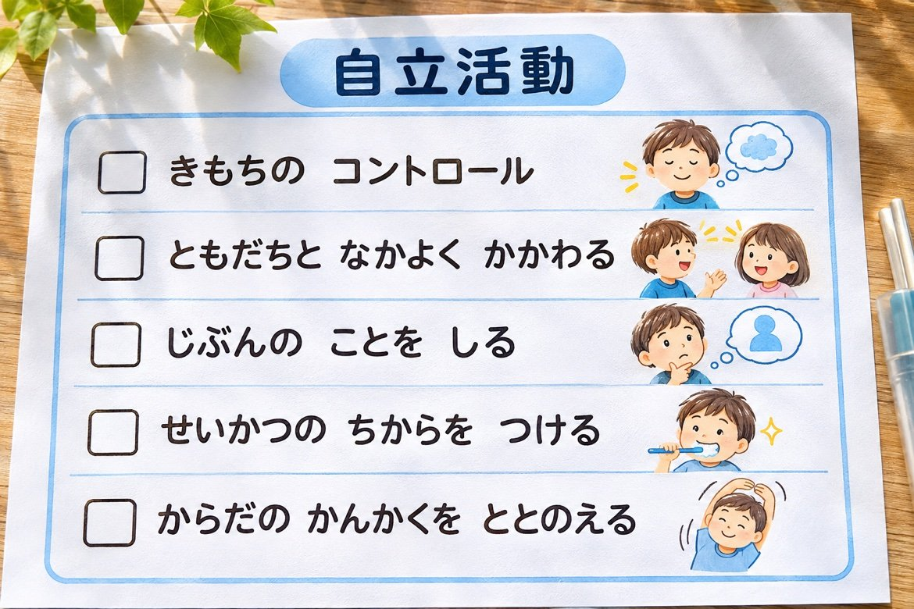
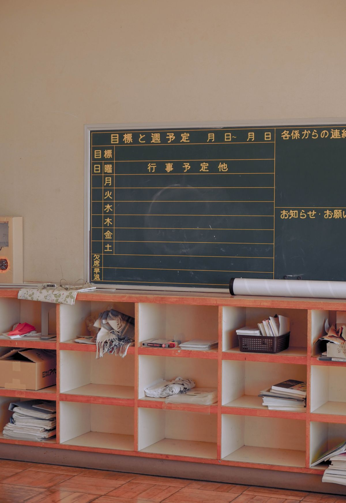
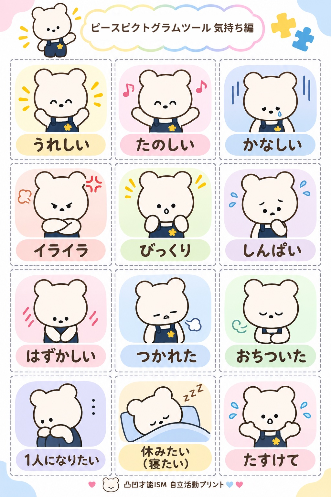

教材紹介
家庭や学校で使える支援のヒント。

Materials
教材の種類

本人用
自分に合う方法で取り組めるワークです。書く・選ぶ・指さすなど、短い指示と見本から始められます。
家庭用
家での始め方や取り組み方の工夫、声かけをまとめた、保護者・養育者向けのガイドです。
学校・支援者用
ねらいや様子の見取り、つまずきに応じた調整の仕方をまとめた、先生・支援者向けのガイドです。その子にどう調整するかに答えます。

先生向けの授業案
準備物から、導入・展開・振り返りの流れ、評価のポイントまで。その時間をどう進めるかが分かる授業案です。提示用の見本やカードも合わせます。

絵カード「ピースピクトグラムツール」
気持ちやお願いを伝えるための教材。愛称は「Pトーク」。ピースの絵カードで、話すためのカードです。
プリントの配布はオープンチャット内で行います。
つながる場所。
本人、ご家族、先生、支援者。
それぞれの立場から交流できるコミュニティです。